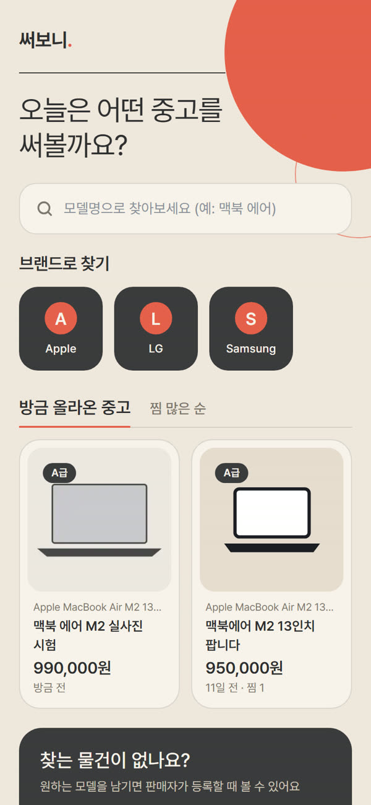
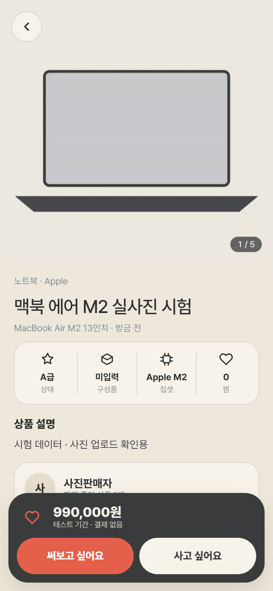
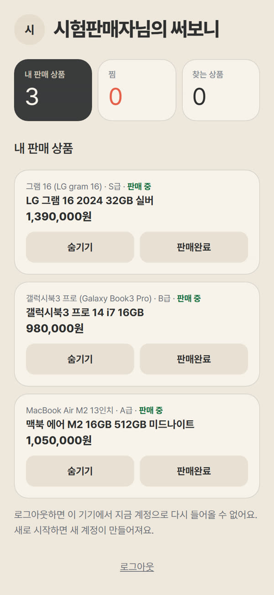

써보니.
사기 전에 써보는 중고거래,
써보니 디자인 가이드
써보니 앱 화면을 만들고 고칠 때 같은 기준으로 맞추기 위한 문서입니다. 색, 글자, 구성 요소, 사진, 문구 규칙을 실제 앱 코드 값 그대로 담았습니다.
원칙
색상
앱 코드의 app/src/app/globals.css 톤 블록 값입니다. 화면에는 이 6가지와 선 색만 씁니다.
--tone-cream #EFE7DC앱 바탕--tone-paper #F7F2EA카드, 입력칸, 하단 탭--tone-sand #E6DCCF사진 자리, 보조 면--tone-charcoal #3B3B3D결정 버튼, 강조 카드, 상세 가격 막대--color-ink #2F2F31본문 글자, 선택된 칩--color-coral #E5604B써보기, + 판매하기, 활성 표시 점선: rgba(59, 59, 61, 0.16) · 보조 글자: #7D766D · 차콜 위 보조 글자: #CFC6BA
대비
글자가 잘 읽히는지 WCAG 대비 비율로 계산했습니다. 일반 글자는 4.5:1, 큰 글자(18.66px 굵게 이상)는 3:1이 기준입니다.
| 조합 | 비율 | 판정 | 쓰는 곳 |
|---|---|---|---|
| 잉크 글자 / 크림 | 10.90:1 | 통과 | 본문, 제목 |
| 잉크 글자 / 종이 | 11.99:1 | 통과 | 카드 안 글자 |
| 종이 글자 / 차콜 | 10.03:1 | 통과 | 차콜 카드, 가격 막대 |
| #CFC6BA / 차콜 | 6.62:1 | 통과 | 차콜 위 보조 글자 |
| 보조 글자 #7D766D / 종이 | 4.02:1 | 보완 필요 | 모델명, 등록 시각 |
| 보조 글자 #7D766D / 크림 | 3.66:1 | 보완 필요 | 안내 문장 |
| 흰 글자 / 코랄 | 3.44:1 | 보완 필요 | 코랄 버튼(16px 굵게) |
| 코랄 글자 / 크림 | 2.81:1 | 글자에 쓰지 않음 | 장식·점에만 |
| 비활성 탭 #A39B90 / 종이 | 2.46:1 | 보완 필요 | 하단 탭 비활성 이름 |
#6B655D로 어둡게, 코랄 버튼 글자 바탕은 #C94A36(흰 글자 4.65:1)으로, 비활성 탭 글자는 보조 글자와 같은 색으로 바꿉니다. 이 문서의 보조 글자는 이미 #6B655D를 씁니다.글자
글꼴은 Pretendard Variable(무료 OFL)입니다. 한글은 띄어쓰기 단위로만 줄을 바꾸고(word-break: keep-all), 휴대폰 자동 번역은 막아 둡니다. 이 문서는 공유 페이지 제약으로 Pretendard가 없는 환경에서 Noto Sans KR로 보일 수 있습니다.
간격과 모양
| 항목 | 값 | 설명 |
|---|---|---|
| 화면 폭 | 최대 480px | PC에서도 휴대폰 폭으로 가운데 정렬 |
| 좌우 여백 | 20px | 모든 화면 공통 |
| 묶음 사이 간격 | 20px | 섹션 사이. 묶음 안은 8~12px |
| 카드 모서리 | 22px (사진 16px) | 상품 카드, 정보 카드 |
| 버튼 | 알약형 999px, 높이 52~56px | 모든 행동 버튼 |
| 칩·선택 버튼 | 알약형, 높이 44px 이상 | 상태 등급, 목적, 정렬 |
| 입력칸 | 모서리 16px, 높이 54px, 1px 선 | 포커스 때 잉크색 선 |
| 터치 영역 | 44px 이상 | 워드마크, 칩, 아이콘 버튼 포함 |
| 떠 있는 요소 그림자 | 0 12px 30px, 14% 투명도 | 하단 탭, 상세 가격 막대만 |
구성 요소
버튼
코랄은 써보기·찾는 상품 남기기 같은 주 행동, 차콜은 등록·구매처럼 결정하는 행동, 종이색은 보조 행동에 씁니다. 한 화면에 코랄 버튼은 하나를 넘기지 않습니다.
선택 칩과 상태 배지
브랜드 타일과 상품 카드
카드 순서는 사진 → 모델명 → 제목 → 가격 → 등록 시각·찜 수로 고정합니다. 브랜드 표식은 회사 로고가 아니라 이름 첫 글자입니다.
상세 속성 줄과 하단 가격 막대
가격은 버튼과 다른 줄에 두어 금액이 길어도 잘리지 않게 합니다. 두 버튼은 의향만 기록하며 결제나 신청을 시작하지 않습니다.
사진
판매자 실사진
판매 등록에서 최대 5장을 올립니다. 첫 장이 대표 사진이 되어 카드와 상세 첫 화면에 나옵니다. 상세에서는 옆으로 넘기며 “1 / 5”처럼 위치를 보여 줍니다.
저장 규칙
올린 사진은 긴 변 1600px의 webp로 다시 저장하고, 촬영 위치(GPS) 같은 메타데이터를 지웁니다. 한 장 10MB, 상품당 5장이 한도입니다.
사진이 없을 때
모래색 바탕에 모델 종류 일러스트(노트북, 태블릿, 음향, 카메라)를 보여 주고, 화면 읽기 프로그램에는 “상품 사진 준비 중(모델 일러스트)”으로 알립니다.
쓰지 않는 사진
제조사 공식 사진이나 AI로 만든 사진을 실제 상품처럼 보여 주지 않습니다. 브랜드 로고도 쓰지 않습니다.
문구
말투
짧은 해요체로 씁니다. 버튼은 하는 일을 그대로 씁니다(“등록하기”, “찾는 상품 남기기”). 오류는 무엇이 문제인지와 어떻게 하면 되는지를 함께 씁니다(“사진 한 장은 10MB 이하로 골라 주세요.”).
사실대로 쓰기
테스트 기간에는 “결제와 배송은 일어나지 않아요”, “써보기는 아직 준비 중이에요”처럼 지금 상태를 그대로 씁니다. 없는 기능을 약속하지 않습니다(“알려드릴게요” 같은 알림 약속 금지).
쓰지 않는 말
체험료, 대여료, 렌탈, 100% 페이백, 결제 시스템 점검 중. 요금과 환불 정책은 PG·법률 확인 전이라 정해지지 않았습니다.
시작 화면
링크를 받은 누구나 닉네임만 정하면 시작합니다. 닉네임은 화면 표시용이고 같은 이름이 있어도 괜찮다고 안내합니다.
화면 예시
2026-10-07 앱 화면 캡처(390px)입니다. 상품과 사진은 화면 확인용 시험 데이터입니다.






해야 할 것과 하지 말 것
- 사진과 가격을 가장 크게 보여 준다
- 강조색은 코랄 하나, 결정은 차콜
- 면은 1px 선으로 나눈다
- 모든 숫자는 실제 값, 3명 미만 수요는 숫자를 숨긴다
- 터치 영역 44px 이상, 포커스 테두리 보이게
- 360·390·430px 폭에서 가로로 넘치지 않는지 확인
- 남색·노랑·라임 같은 추가 강조색
- 제목 위 작은 라벨(“브랜드 고르기” 같은 머리말)
- 카드 안의 장식용 원호, 이모지 아이콘
- 가짜 매너온도·조회수·후기
- 체험료·렌탈·환불 금액을 확정처럼 표시
- 코랄 글자를 크림 바탕 본문에 사용
기준과 출처
| 기준 코드 | E:\PROJECTS\04_써보니\app\src\app\globals.css (톤 블록·사진 블록), 브랜치 gate0/market-ui, 작업 트리 미커밋 상태 |
|---|---|
| 화면 원본 | E:\PROJECTS\04_써보니\앱화면_2026-10-07\ |
| 참고 이미지 | Pinterest·Dribbble 레퍼런스에서 색감·톤·분위기만 참고했습니다. 화면 구조는 써보니 고유 구조입니다. |
| 상태 | Gate 0 테스트용 1.0. 대비 보완 3건은 다음 수정에서 반영 예정입니다. |